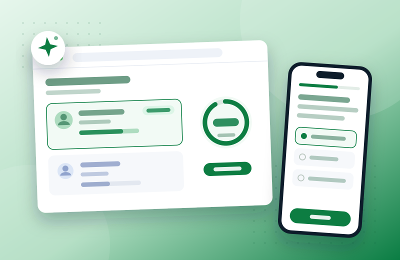

goLance · AI marketplace
Matching trust — designing the UX for goLance's AI cultural-fit engine

The problem
At marketplace scale, matching on skills alone still produced mismatched, short-lived engagements — the real gap was cultural and working-style fit, which is hard to assess and easy to fake. The company was betting on AI to close it, but AI matching and automated assessment only create value if hiring users trust and act on what the model surfaces. My job was to make opaque, probabilistic outputs legible and credible inside real hiring decisions.
My role
End-to-end design owner across the freelancer portal, client/recruiter side, payments, and the platform's AI features — working directly with the AI/data and product teams. I designed the UX of the AI features; the models were built by the AI/data team.
The work — decisions that mattered
An assessment that builds a real profile
I designed the Cultural Fit Assessment end-to-end — an LLM-supported, scenario-based evaluation where AI-generated adaptive questions build an individual cultural profile. I designed how questions branch and how answers resolve into a profile.
Scores as confidence, not verdicts
Because matching is a learning model rather than static scoring, I designed compatibility scores and “Best Match” indicators to read as confidence signals — placed at the decision point in the hiring flow, informing the hire without overclaiming certainty the model couldn't back.
Designing for imperfect AI
On Mango AI, the contractor-management assistant, I shaped how AI-generated summaries, performance insights, and flagged issues are presented — prioritizing what a client needs to verify, and making each flag's reasoning inspectable so people trust it enough to act.
Also part of the work
- Rebuilt payment and checkout by mapping drop-off, cutting steps, and clarifying cost and confirmation states.
- Designed the core work-verification workflows — dashboards, scheduling, time tracking, in-hours session monitoring — balancing employer verification against freelancer transparency.
- Drove marketplace-wide usability through IA and interface consistency; contributed to the marketing website.
Outcome
The Cultural Fit Assessment and matching experience raised project engagement by 25%. The checkout redesign cut drop-off by 22% and support load by 40%, and broader usability work reduced task-completion time by 30%. The harder result: hiring users had a reason to trust automated matching, and acted on model outputs they would otherwise have ignored.
UX research · information architecture · interaction design · AI/LLM UX · design systems · WCAG accessibility · cross-functional work with AI/data · Figma
Looking back
Next I'd push explainability further — surfacing why a match scored the way it did, not just how confident the model is.
Let's talk
Open to senior product-design roles across Poland — hybrid or remote, B2B or employment contract.